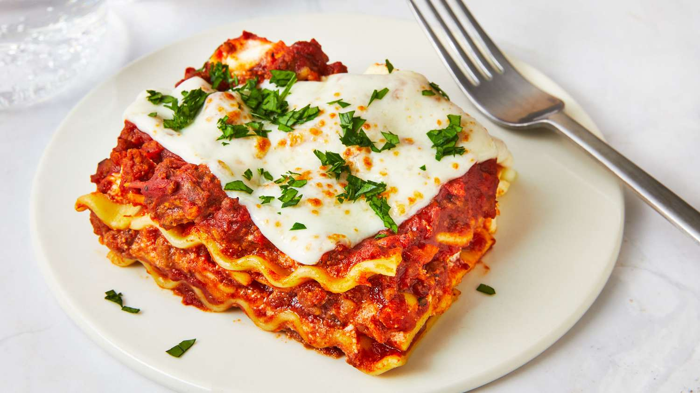

Classic homemade lasagna

Description
Ingredients:
- Cheese Filling: For this classic lasagna recipe, the filling contains ricotta and parmesan with seasonings and a couple of tablespoons of parsley. No ricotta? No problem, cottage cheese works just fine in this recipe!
- Meat: I use both Italian sausage and ground beef for great flavor. If using all beef, add a ¼ teaspoon of fennel seeds and some Italian seasoning to the meat mixture for flavor.
- Sauce: To keep this sauce quick, I use pasta sauce or marinara sauce (it’s easy to make from scratch with crushed tomatoes and canned tomatoes if you’d prefer).
How to make:
- Boil pasta: Cook in a large pot of salted water per the recipe below.
- Prepare meat sauce: Cook sausage and beef with onion and garlic. Drain well, add the pasta sauce & simmer it for a few minutes to thicken.
- Combine cheese mixture: Stir the cheese mixture together in a bowl.
- Layer & bake: Layer the meat sauce and cheese mixture with lasagna noodles and bake until browned and bubbly.